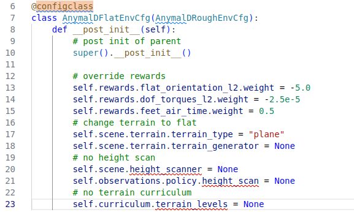

Type annotation과 Mutable default 을 자동으로 처리하므로 사용하기 간단함
Class instance와 dictionary 간의 쉬운 변환을 위한 유틸리티 메소드 제공
🏁Introduction
본 포스팅에서는 python에서 기본적으로 제공하는 @dataclass와 IsaacLab에서 사용하는 @configclass 간의 차이점을 소개한다.

image-20240820212004490
본 포스팅을 진행하는 이유는 IsaacLab extension 프로젝트인 IsaacLabExtensionTemplate 에서 사용하는 코드 중 위 이미지와 같이 configclass decorator를 발견했는데, 어떠한 용도로 사용되는 지 궁금해서였다. 그래서 설명을 찾아보니 dataclass decorator를 좀 더 확장성 있게 만든 것이라고 설명을 하기에 두가지의 decorator를 비교해보고자 한다.
🌸Decorator란?
우선 Decorator가 뭔지 모를 수도 있으니 간단히 설명하고 넘어가도록 하겠다.
[!NOTE]
어떤 함수를 받아 특정 역할을 수행하고 이를 다시 함수의 형태로 반환하는 함수
Python Decorator 다른 함수를 입력으로 사용하고 명시적으로 수정하지 않고 해당 동작을 확장하거나 변경하는 함수다. Decorator는 일반적으로 깔끔하고 읽기 쉬운 방식으로 함수나 메서드에 기능을 추가하는 데 사용한다.
Decorator template
Code
def my_decorator(func):def wrapper(*args, **kwargs):# Code to execute before the function call result = func(*args, **kwargs)# Code to execute after the function callreturn resultreturn wrapper@my_decoratordef my_function():print("Hello, World!")
위와 같이 my_decorator 를 만들면, 이후의 다른 함수에서 @my_decorator를 붙여서 사용할 수 있다.
Example - logging
Code
def log_decorator(func):def wrapper(*args, **kwargs):print(f"Calling function {func.__name__}") result = func(*args, **kwargs)print(f"{func.__name__} returned {result}")return resultreturn wrapper@log_decoratordef add(a, b):return a + badd(3, 4)
Calling function add
add returned 7
7
위 실험결과로 알 수 있 듯, add 함수를 호출하면 function이 decorator 함수로 들어가서 내부 기능을 수행한 후에 결과값을 뱉어낸다.
Example - Timing Decorator
Code
import timedef timing_decorator(func):def wrapper(*args, **kwargs): start_time = time.time() result = func(*args, **kwargs) end_time = time.time()print(f"{func.__name__} took {end_time - start_time} seconds")return resultreturn wrapper@timing_decoratordef compute_square(n):return n * ncompute_square(10)
compute_square took 7.152557373046875e-07 seconds
100
위와 같이 시간 측정 시에도 사용할 수 있다.
Keypoints
Decorators: 실제 코드를 변경하지 않고 기능을 수정하거나 향상시킨다.
@ syntax: @decorator_name 문법은 Decorator를 사용하기 위한 방법이다.
💽Dataclass 기능
Python의 dataclass는 dataclasses 모듈(Python 3.7에서 도입됨)이 제공하는 데코레이터이자 유틸리티로, __init__, __repr__, __eq__ 등과 같은 특수 메서드를 자동으로 생성한다. 주로 데이터를 저장하고 상용구 코드를 줄이는 데 사용되는 클래스 생성을 단순화하도록 설계되었다.
@dataclass로 클래스를 장식하면 Python은 자동으로 다음 메서드를 생성한다.
__init__: 매개변수를 기반으로 속성을 설정하는 초기화 방법.
__repr__: 읽을 수 있는 문자열 출력을 제공하는 문자열 표현 방법.
__eq__: 속성을 기준으로 인스턴스를 비교하는 동등 방법.
__hash__: 객체를 hashable 하게 만드는 해시 방법(선택 사항, frozen 설정에 따라 다름).
Alice
30
Unknown
Person(name='Alice', age=30, job='Unknown')
True
위 예시와 같이 dataclass를 사용하면 아래와 같은 이점들을 얻을 수 있다.
Boilerplate 최소화
@dataclass 데코레이터는 __init__, __repr__ 및 __eq__와 같은 메서드를 자동으로 생성하여 반복적인 코드를 작성하지 않아도 됨.
Type Annotation
dataclass는 Python의 type hint를 사용한다. 단 각 필드에는 ype annotation이 있어야 한다.
Default Value
일반 클래스 속성과 마찬가지로 필드에 기본값을 제공할 수 있다.
Immutability
데코레이터에서 frozen=True를 설정하면 데이터 클래스를 불변으로 만들 수 있다. 즉, 생성 후에 해당 속성을 수정할 수 없다.
Automatic Ordering
데코레이터에서 order=True를 설정하면 필드 순서에 따라 비교 방법(__lt__, __le__, __gt__, __ge__)을 자동으로 생성할 수 있습니다.
Code
from dataclasses import dataclass, field@dataclass(order=True, frozen=True)class Product: name: str= field(compare=False) price: float quantity: int= field(default=0, compare=False) # Exclude from ordering# Creating an instancep1 = Product(name="Laptop", price=999.99)p2 = Product(name="Tablet", price=499.99)# Comparing products (by price since quantity is excluded)print(p1 > p2) # Output: True# p1.name = "wrong"
True
💾configclass 분석
Code
def __dataclass_transform__():"""Add annotations decorator for PyLance."""returnlambda a: a@__dataclass_transform__()def configclass(cls, **kwargs):"""Wrapper around `dataclass` functionality to add extra checks and utilities. As of Python 3.7, the standard dataclasses have two main issues which makes them non-generic for configuration use-cases. These include: 1. Requiring a type annotation for all its members. 2. Requiring explicit usage of :meth:`field(default_factory=...)` to reinitialize mutable variables. This function provides a decorator that wraps around Python's `dataclass`_ utility to deal with the above two issues. It also provides additional helper functions for dictionary <-> class conversion and easily copying class instances. Usage: .. code-block:: python from dataclasses import MISSING from omni.isaac.lab.utils.configclass import configclass @configclass class ViewerCfg: eye: list = [7.5, 7.5, 7.5] # field missing on purpose lookat: list = field(default_factory=[0.0, 0.0, 0.0]) @configclass class EnvCfg: num_envs: int = MISSING episode_length: int = 2000 viewer: ViewerCfg = ViewerCfg() # create configuration instance env_cfg = EnvCfg(num_envs=24) # print information as a dictionary print(env_cfg.to_dict()) # create a copy of the configuration env_cfg_copy = env_cfg.copy() # replace arbitrary fields using keyword arguments env_cfg_copy = env_cfg_copy.replace(num_envs=32) Args: cls: The class to wrap around. **kwargs: Additional arguments to pass to :func:`dataclass`. Returns: The wrapped class. .. _dataclass: https://docs.python.org/3/library/dataclasses.html """# add type annotations _add_annotation_types(cls)# add field factory _process_mutable_types(cls)# copy mutable members# note: we check if user defined __post_init__ function exists and augment it with our ownifhasattr(cls, "__post_init__"):setattr(cls, "__post_init__", _combined_function(cls.__post_init__, _custom_post_init))else:setattr(cls, "__post_init__", _custom_post_init)# add helper functions for dictionary conversionsetattr(cls, "to_dict", _class_to_dict)setattr(cls, "from_dict", _update_class_from_dict)setattr(cls, "replace", _replace_class_with_kwargs)setattr(cls, "copy", _copy_class)# wrap around dataclass cls = dataclass(cls, **kwargs)# return wrapped classreturn cls
설명을 그대로 해석하면 다음과 같다.
dataclass 함수를 래퍼로 감싸서 추가 검사 및 유틸리티를 추가한다.
파이썬 3.7부터 지원을 시작한 표준 dataclass에는 두 가지 주요 문제가 있어서 일반적이지 않다.
모든 멤버에 대해 타입 annotation이 필요함.
가변 변수를 재초기화하기 위해 field(default_factory=...)를 명시적으로 사용해야함.
configclass는 파이썬의 dataclass 유틸리티를 감싸는 데코레이터를 제공하여 위의 두 가지 문제를 처리한다.
또한 dictionary <-> class에 대한 추가 helper 함수를 제공한다.
즉, dataclass의 부족한 부분을 채워줬다고 이해하면 된다. 아래 예제를 통해 좀 더 알아보자.
@configclassclass ViewerCfg: eye: list= [7.5, 7.5, 7.5] # field missing on purpose lookat: list= field(default_factory=[0.0, 0.0, 0.0])@configclassclass EnvCfg: num_envs: int= MISSING episode_length: int=2000 viewer: ViewerCfg = ViewerCfg()# create configuration instanceenv_cfg = EnvCfg(num_envs=24)# print information as a dictionaryprint(env_cfg.to_dict())# create a copy of the configurationenv_cfg_copy = env_cfg.copy()# replace arbitrary fields using keyword argumentsenv_cfg_copy = env_cfg_copy.replace(num_envs=32)
위와 같이 to_dict 함수를 제공함으로써 편리하게 dictioary화 하고, copy로 복사를 할 수 있다. 또한 replace를 통해 copy를 하면서 값을 변경할 수도 있다.
configclass 데코레이터는 구성 관리에서 발생하는 일반적인 문제를 해결하여 dataclass 기능을 기반으로 구축된 강력한 유틸리티이다. mutable한 기본값을 쉽게 처리하고, type annotation을 동적으로 제공하고, replace 및 copy와 같은 일반적인 작업을 위한 utiliy method를 제공하여 구성 클래스 생성을 단순화한다. configclass 데코레이터는 구성 객체가 유연하고 강력하며 조작하기 쉬워야 하는 애플리케이션에 특히 유용하다.
요약하자면, 아래와 같이 표로 정리할 수 있다.
Feature/Aspect
dataclass
configclass
Purpose
General-purpose data storage
Configuration management with additional utilities
Type Annotations
Required for all fields
Automatically handled, no need for explicit annotations
Mutable Defaults
Requires field(default_factory=...)
Automatically managed, no need for default_factory
Post-Initialization
Supports __post_init__ for customization
Augments or creates __post_init__ for additional logic
Utility Methods
Basic methods like __init__, __repr__
Additional methods like to_dict, from_dict, copy, replace